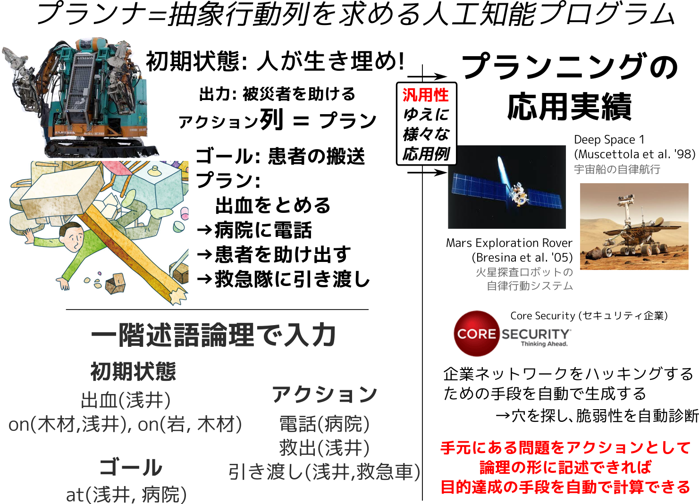

研究課題名: 問題分割と対称性検知を用いた、高速なプランニングアルゴリズムの開発
浅井 政太郎(受付番号10073) 東京大学 総合文化研究科
発表要旨
東京大学博士一年の浅井政太郎と申します。発表を始めます。
1 研究テーマ: プランニング(自動行動計画)とは?

研究テーマのプランニングは、ロボットに、人間の助けを借りず、いかに賢く、自分で行動させるかを扱います。 人間でもそうですが、賢いロボットは、自分の行動の結果をよく先読みして行動する必要があります。
これをモデル化したプランニング問題は、具体的な行動の列、手順を求める 組合せ最適化問題です。
たとえば、ロボット掃除ドメインというものを考えましょう。 プランニング問題のソルバは、ロボットに全部屋を掃除させる手順を出力します。
プランニングは、様々な問題を一階述語論理を用いて柔軟に表現できます。例えば、
1.1 プランニングとは?

同じ掃除ドメインの4部屋インスタンスも表現できますし、 現実の応用例では「宇宙探査ドメイン」も表現できます。
このように、プランニングは、難しい問題を汎用性を失わずに解くことを目指します。
仮に将来、写真のような救助ロボットにプランニングソルバを組み込めば、 被災者を発見した時に適切な行動を自ら選択できるようになるかもしれません。
2 プランニングが用いる 他分野からの技術
プランニングでは、様々な周辺分野からの技術が用いられます。 主にAIやORの分野と大きく重なっています。 XXX 理論、システム 特に、プランニング問題を解くのにはグラフ探索の技術が用いられます。

3 研究業績1 : 査読付き学会論文 ICAPS14
研究業績に移ります。 ここでは、大規模なプランニング問題を解くために 問題設定・ドメインによらず汎用に繰り返し構造を抽出する方法を開発しました。 元の問題を繰り返し一周分の小問題に分割して解くことで、 高速化と3割の生産時間短縮を達成しました。
大切なのは汎用性です。 生産問題に限らず、掃除にも宇宙船にも同じ実行バイナリが使えます。

4 研究業績2,3 : 査読付き学会論文 KEPS14, ICAPS15
続いて二、三本目の業績は、 先ほどの手法で得られるのは1種類の小問題だけでしたが、これを複数種類の小問題に拡張しました。 結果、より様々な問題で高速化を達成しました。 ここまで汎用に小問題分割を適用した研究は、分野では始めてです。

5 研究業績4 : 査読付き学会論文 AAAI16 ( 申請後に採択 )
最後に、速報です! 申請後に行った研究が、人工知能分野で最も権威ある難関国際学会, AAAI に採択されました。 研究内容は、コスト0の辺を含むグラフを扱うグラフ探索アルゴリズム一般に適用できる内容で、 非常に大きなインパクトを持つことが考えられます。

6 今後の研究計画
今後の研究計画です。 今後の研究の目的は、より大規模な問題の求解です。 その上で2つの課題があります。
一つ目は、探索空間の対称性が問題を難しくすることです。 これは、対称性を破ることで改善します。
二つ目は、非対称な構造に対する扱いです。 これには問題分割を適用します。
ただし、これら個別の改善も重要ですが、 研究の主眼は2つの融合にあります。 その結果、より大規模な産業利用が可能になります。

7 まとめ
以上です、ありがとうございました。
- これまでの研究業績 : 査読付き学会論文
- 難関国際会議 Asai, M. and Fukunaga, A. Fully Automated Cyclic Planning for Large-Scale Manufacturing Domains. In Proceedings of the 24th International Conference of Automated Planning and Scheduling(ICAPS), June 2014. 採択率33%
- 任意の問題から1種類の繰り返し構造を自動で検出
- 工場での製造スケジューリング (x1000 高速化, 探索空間 106 → 10274)
- 査読付きワークショップ Asai, M. and Fukunaga, A. Applying Problem Decomposition to Extremely Large Planning Domains. In Proceedings of the 5th Workshop on Knowledge Engineering for Planning and Scheduling(KEPS), June 2014.
- 複数種類の繰り返し構造の検出
- 難関国際会議 Asai, M. and Fukunaga, A. Solving Large-Scale Planning Problems by Decomposition and Macro Generation. In Proceedings of the 25th International Conference of Automated Planning and Scheduling(ICAPS), June 2015. 採択率33%
- 複数の繰り返し構造をより柔軟・汎用に組み合わせる手法
- ベンチマークセット全体で高速化 (x3-4 高速化, 探索空間 107 → 1028)
- 難関国際会議 Asai, M. and Fukunaga, A. Tiebreaking Strategies for Classical Planning Using A* Search. In Proceedings of the 30th AAAI Conference on Artificial Intelligence, February 2016. 採択率26%
- コストゼロの辺がグラフ探索に引き起こす問題を解決
- コストゼロの辺を含むグラフ探索全てに影響 (探索空間 106 → 1088)
- 難関国際会議 Asai, M. and Fukunaga, A. Fully Automated Cyclic Planning for Large-Scale Manufacturing Domains. In Proceedings of the 24th International Conference of Automated Planning and Scheduling(ICAPS), June 2014. 採択率33%
- 今後の研究計画
- 探索グラフの対称性の検知技術と、小問題分割技術の融合
8 付録 プランニング問題とは (定義)
アクション集合 A, オブジェクト集合 O, 初期状態 I, ゴールG
状態 := 真である命題の集合
アクションa∈A : < pre(a), add(a), del(a), cost(a) >
ただし、 pre(a): 前提条件, add(a): 追加効果, del(a): 削除効果, cost(a): アクションの適用コスト
状態sに対するアクションaの適用: pre(a) ⊆ s の時に適用可能で、
a(s) = ( s ∪ add(a) ) / del(a)
終了判定: s ⊇ G ならば ゴール達成
9 付録 古典プランニングを研究する意義は?

10 付録 AIの倫理について
- 研究内容は 漠然とした「AI」のうち グラフ探索 の研究
- 善悪の判断はそれ自体は行わない
- 価値判断は与えられる入力の中にある = 使用者の価値観を反映する
- 悪用の問題はある。しかし、自分としては、災害救助ロボットなど、人道的な応用を目指している
11 付録 ディープラーニングとどう違うのか
- 機械学習を埋め込むことは可能だ
- が、求められる推論の複雑さが根本的に違う → 独立した分野
ニューラルネット, DL, 強化学習
- 入力: 現在のデータ、過去の履歴、報酬 etc..
- 出力:
- 次の1ステップ のアクション選択ポリシー (強化学習)
- 固定長の分類結果 (画像認識)
- ある意味 状況に応じて脊髄反射 なエージェント
プランニング 出力:
- 10ステップ, 100ステップ先 の未来を 先読み した行動計画
- ICAPS14,15の手法を使えば 数千ステップ 先の未来まで先読みすることが出来る
ただしプランニングに学習機を埋め込むことは 可能 (実例複数あり)
DLから見て、プランニングは アプリケーション
プランニングから見て、DLは ツール
両者の組み合わせは機会があればやってみたい
11.1 付録 ディープラーニング関連
趣味の一環で、Common Lisp から直接使えるGPGPUのライブラリを作成中 (DLを作ってみるため)
- OpenCLベース
- Lisp の文法を直接 OpenCL C に変換し実行するトランスレータ
- OpenCLのメモリ管理を Lisp GC に埋め込み
12 付録 第五世代コンピュータとの違いは?
第五世代コンピュータ : 並列推論機械(Prologベース,ハードウェア,OS)
根本的なソフトウェア技術、 探索技術 が未発達だった
| 第五世代 | 現在 |
|---|---|
| 後方全探索+バックトラック | 前方ヒューリスティック探索 |
| Prologベース | C/C++で高度に最適化されたプログラム |
| State packing, 決定木, mutex… |
今はベンチマーク問題 1104問 のうち 5分で 800問 前後解ける
仮に 当時のソフトウェア を 現在のハードウェア で動かしたとしても、 100問も解けないだろう
13 付録 Explicit Graph と Implicit Graph との違い
カーナビ、ソーシャルグラフなど : Explicit Graph Search
グラフ全体がメモリ(〜数ペタバイト)または二次記憶(〜数ゼタバイト)に収まる
参考: 2012年の全世界のデジタルデータ: 数ゼタバイト (1ZB = 1021 バイト)
AI and Web の分野など
プランニングにおける探索グラフ : Implicit Graph Search
地球に存在する全計算資源を集めても二次記憶に入らない
グラフのノード数は状態変数に対して 指数的に増加
動的に必要な量のみメモリ確保をしないと問題が解けない
探索空間サイズの例:
3x3x3のルービックキューブ: 4.32 x 1019 = 4 エクサバイト
4x4x4のルービックキューブ: 7.40 x 1045 > 1024 ゼタバイト
5x5x5のルービックキューブ: 2.83 x 1074
Gantz et al. "The digital universe in 2020: Big data, bigger digital shadows, and biggest growth in the far east." IDC iView: IDC Analyze the Future 2007 (2012): 1-16.
14 付録 似たような研究は誰がやっていますか どこでやられていますか
国内ですか、国外ですか？
YES NO
15 付録 プランニングはマイナーで大したことのない分野?
日本にプランニングの研究室がない ≠ 世界で研究室がない
ICAPS, SoCS : 例年150人-200人の参加者を集めており大変盛況,
AAAI, IJCAI : プランニングに関する論文は例年数十本採択 Proceedingsの一つの章をなす
JAIR, AIJ : 論文誌でもプランニングの論文は多い (JAIR Volume 54: 12本中 2本 がプランニング論文)
主な研究室:
MIT CSAIL (Brian Williams), Carnegie-Mellon,
NASA (NASA Ames および NASA/Caltech JPL のそれぞれに20名以上の研究者), 欧州宇宙機関(ESA)
指導教員は NASA JPL AI Lab の元メンバー
16 付録 汎用性を失わずに解く?
No Free Lunch 定理: 最適化アルゴリズムの性能は 全問題の平均を取れば 全て同じ
Q. NFL定理のもとで「汎用性を失わずに高速に解く」というのは不可能?
A. NFL定理は確かにそのように主張するが、プランニング分野の意味する「汎用性」は
人間にとって有意義な問題の集合 における汎用性である。
全プランニング問題の集合 ⊇ 人間にとって有意義な問題の集合
従って、 全問題の平均を取れば という前提が成り立たない。
17 付録 その研究は…
| 重要度 | 評価 | オリジナリティ | 過去のインパクト | 未来のインパクト | 動機 | |
|---|---|---|---|---|---|---|
| ACP | 発表した | ループの概念を検出 | はるかに巨大な問題 | 産業応用 | 人間プログラマでは追いつかない | |
| 難関学会 | 大規模問題 | |||||
| CAP | 難関学会 | 問題分割手法 | 大規模な問題 | 産業応用 | ||
| 発表した | 柔軟な統合手法 | それまでの分割系の手法より | 混ざった問題 | |||
| いくつか質問された | 広範囲に分割 | |||||
| メールやり取り | ||||||
| AAAI16 | 三人中 | 同コストのノードの分類 | 70年代からの定説を覆す | 広範なグラフ探索問題 | ||
| 二人の査読者に絶賛された | 通常と異なる方法で性能改善 | 基礎技術 | ||||
| コスト0は実応用によく使われる | ||||||
| 過去全体 | ||||||
| 未来全体 | ||||||
| 過去未来 | ||||||
| グラフ探索の下界関数 | ||||||
| どちらも | ||||||
| 対称性 | underinvestigated, | 産業応用 | これの改善では改善に限界がある | |||
| もっとしらべるべき | ことがわかっている | |||||
| 問題分割 | とされている | どちらも綺麗なアイディアではない | ||||
| 産業応用 | ||||||
| 融合 | ||||||
17.1 国内で誰が似たようなことをやっているか
この専門分野をやっている人は少ないんですが、 少し離れているが最も似ている研究というと
SATソルバの研究の人はいる – 田中先生
推論系 – logic and reasoning
Lemma Reusing for SAT based Planning and Scheduling ICAPS 10年ぐらい前 NIIの井上勝海 CSP でプランニング
神戸大学 田沼先生 SAT
九大 横尾誠先生 AAMAS マルチエージェントCSP
自分の指導教官がアメリカから飛んできた研究者なので、もともと日本にいなかった研究者だった
スライド2を見せる
ERATOの人は同じくグラフ探索をやっていますが、 explicit/implicit の違いがあります。 瓦林先生 秋葉さん
Katsutoshi Hirayama, Kobe university (constraint optimization, CSP, distributed CSP)
Toru Ishida (Kyoto U. stopped working in search a long time ago, but for a while, he was the leader in A*-related search methods in Japan; coauthored some papers with Korf).
18 付録 学会論文の位置づけ
19 HTN と ICAPS-15 の違い
HTNは人間が問題分割を行う 人件費を考えると非常にコストパフォーマンスが悪い → 自動で問題分割
20 付録 Q&A
- Q. 探索空間の比較について、なぜ「以前」の数字がスライドによって変わるの?
- A. 論文の中で使った実験設定が異なるからです。
21 付録 今後のキャリアパスは？
研究者押しで押しまくる 大学あるいは企業の研究者
迷うことなくパッと答える